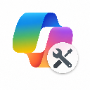

Browser extension that automatically selects GPT 5.5 Think Deeper on Microsoft 365 Copilot Chat — every time, no clicks required.
chrome://extensions, enable
Developer mode (top right)
v3.4 · GitHub · Privacy Policy · Works on Chrome, Firefox, Edge, Brave, Arc